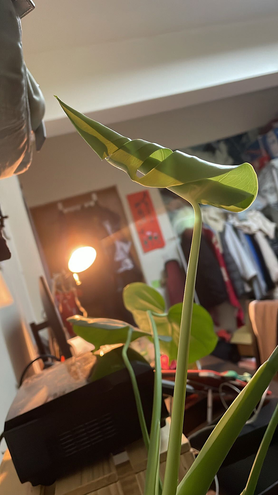

某一年的夏天，收到一盆虎尾蘭盆栽當作禮物，使我瘋狂的踏進植物的世界裡面，當初因為覺得孤苦無依的虎尾蘭總是落魄的待在房間角落，沒有其他朋友陪伴，決定尋找一些夥伴陪伴它成長，就此成為『綠手指』，踏上農夫的不歸路。當初還什麼都不懂的我，什麼植物都不認識，連要如何好好種植一株植物也不清楚，就這樣懵懵懂懂的踏進一家園藝店，詢問老闆有什麼新手適合的植物可以給我種種，老闆推薦我從新手植物龜背芋、山蘇等等開始栽種，因為龜背芋與山蘇都是一兩週澆一次水就會自己一直成長，算是完全不需要特別照顧的植物，堪稱植物殺手也殺不死的植物。
伴隨著初期我種植的寶貝們成長，開始慢慢接觸其他不同種類的植物，加上身邊也因此結交一些植人朋友，在他們的耳濡目染下，開始很愛逛植物園藝店，總是在不同城市，尋找不同可愛迷人的植物，然後把他們帶回家照顧，記得在一次與朋友爬完郊山的回程中，遇見一家園藝店，帶回了一盆黑葉觀音蓮，也因為這樣使我慢慢踏進觀葉植物的坑洞裡面。
| 當初只是一個一吋的黑葉觀音蓮，目前已經成長茁壯. |
從小的記憶裡面，媽媽也喜歡栽種，家裡甚至有一個大花園，裡面各式各樣的植物樹木花卉都有，記得年幼的時候，爸爸媽媽總會花費很多時間待在花園裡照顧裡頭的植物，有時候也要去幫忙搬運爸媽剪下的枯老枝幹葉子等等，以前小時候只覺得爸媽的花園很熱，很不喜歡幫忙去照顧那些植物們，直到自己開始栽種，才發現每天看著這些植物成長，待在有植栽的環境裡面，總會覺得心情很愜意放鬆，好像自己就在一片森林裡面，吸收著乾淨的植物精華，把身心都洗滌的乾淨。
現在每天早上起床，我都會替他們澆澆水，檢查他們的健康狀況，檢查是不是有被蟲害影響，還是排水不足，造成葉子不健康等等，好像每天確認他們都健康著，就開啟了一天的序幕，下班回家的時候，也喜歡開著植物角落的立燈，窩在角落閱讀，沉浸在被植物精華包圍的時光裡，好像開始理解爸爸媽媽當初為什麼在家裡弄了一個大花園栽種，因為植物帶給我們的力量好像也是無敵的。
| 家中植物小角落 |
隨著種植的植物越來越廣泛多元，發現自己很喜歡看植物剛發芽要長大的芽包，還有葉片要展開的時候，都覺得這幾個瞬間是很神奇特別的，一來代表植物們在我為他們建立的環境裡面，都有乖乖成長，二來是也因此代表又孕育了一個新的生命，萌芽出新的生命葉片。常常在發現有植物開始長芽包時，就會每天定期去觀看他們的成長樣貌，慢慢長莖展葉，慢慢成長茁壯...
|  |
| 龜背芋展葉期 |
種植植物到現在，還是偏心的最喜歡觀葉植物，目前種植的植物也以觀葉植物為主，以觀葉植物中的觀音蓮、龜背芋類型居多，分享給大家觀看我目前種植的多種觀音蓮的品種，從下圖上方左至右分別是，銀金葛、閃波觀音蓮、魟魚觀音蓮、犀牛皮觀音蓮、菩提觀音蓮、明脈觀音蓮、姬龜背、黑葉觀音蓮; 下圖下方開始是，我養了很久的龜背芋與小天使蔓綠絨等等，從這張圖就可以發現我有多愛觀音蓮，因為觀音蓮的葉片都是大葉，且不同品種的葉片特徵也都很不同，會喜歡觀葉植物就是因為喜歡不同葉子的特徵，不同的發展模式，不管是葉子的形狀，葉子的顏色，葉子的葉脈，還是莖的紋路顏色都會有很多種的差異，這也是我蒐集不同品種的觀葉植物的興趣之一。
| 家中植物寶貝集合 |